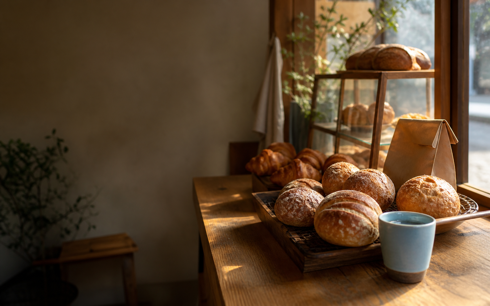

朝の丸パン
そのままでも、スープと合わせても。毎日の食卓に置きやすい、やわらかな定番パンです。

BAKED HERE, EVERY MORNING
季節の果物と、できるだけ素朴な材料で。毎日のとなりに置いておきたいパンと焼き菓子を、店内で少しずつ焼いています。
※ この店舗・商品はLP作例用の架空設定です。
華やかすぎなくても、ふとまた食べたくなる味を。店頭には、その日に焼けた分だけを並べます。売り切れや臨時営業のお知らせはInstagramでご案内します。
実際のLPでは、Googleマップ・Instagram・LINEなど、業種に必要なリンクを複数まとめて配置できます。
この作例では、LINEや電話など実際の受付方法へ案内する想定です。受付条件は店舗の運用に合わせて掲載します。
Instagramなど日々更新できるSNSへのリンクを設置し、最新情報へ迷わず移動できる構成にします。
地図リンクに加え、迷いやすい曲がり角や建物の目印を写真付きで案内することもできます。
今日の焼き上がりを見てから、お越しください。
お店への行き方を見る →
地図・アクセス
最寄駅からの道順や駐車場案内へ。
地図をひらく（作例）
Instagram
本日の焼き上がりと営業日を更新。
最新情報を見る（作例）
LINE
取り置きやお問い合わせの窓口へ。
友だち追加（作例）